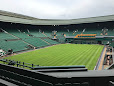
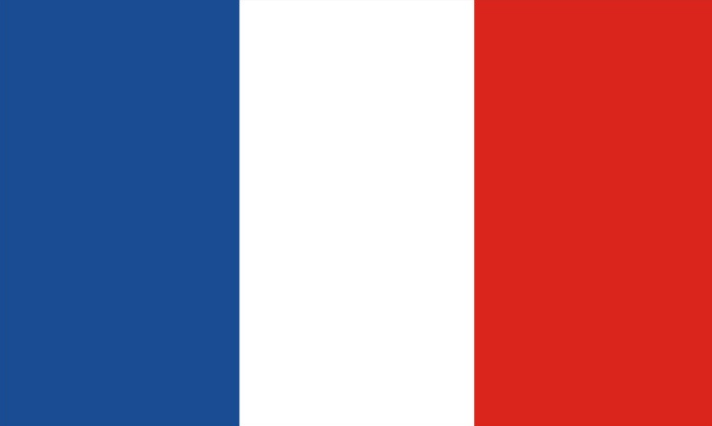
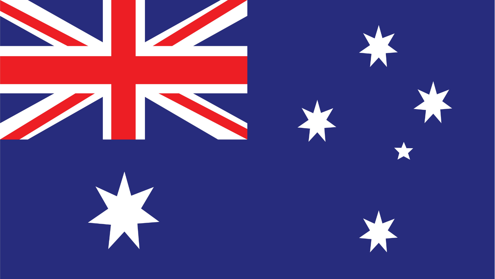

Sistema de Memorización de Torneos de Tenis Grand Slam
El sistema registra todos los encuentros, árbitros, premios y datos de jugadores a lo largo de toda la historia del Grand Slam.
Los Cuatro Torneos del Grand Slam

Wimbledon
País: Gran Bretaña 
Sede: All England Club, Londres
Superficie: Césped

US Open
País: Estados Unidos 
Sedes: Forest Hills, Flushing Meadows
Superficie: Cancha dura

Roland Garros
País: Francia 
Sede: Stade Roland Garros, París
Superficie: Arcilla

Australian Open
País: Australia 
Sede: Melbourne Park, Melbourne
Superficie: Cancha dura